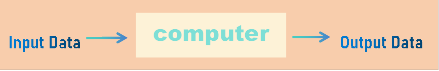
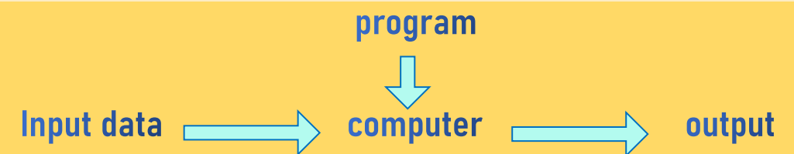
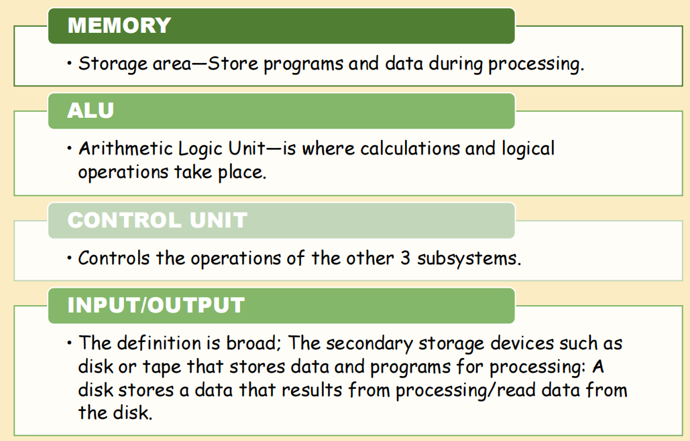
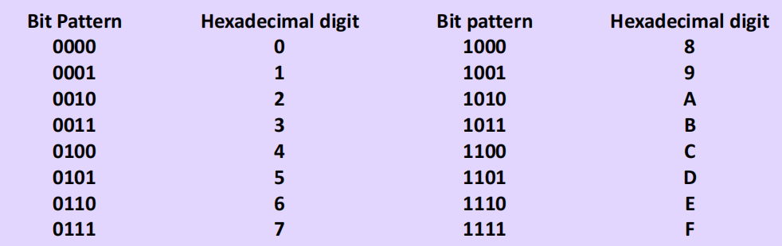
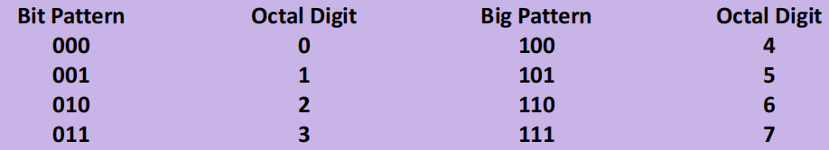
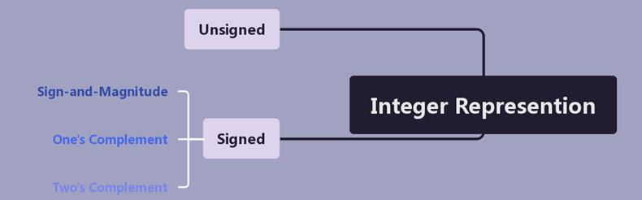

Learning Suggestions
- Try to connect different types of computer models and understand the improvements with the advantages and disadvantages.
- Do more practices to proficient data storage methods and combine mind maps to distinguish the relationship between different storage methods.
- This section will have many new concepts, making sure you understand and get familiar with the definitions and relations between the new phrases.
- To get a better understanding of the history behind computers, looking for more information after class is recommended for supplementary, here we mention the classic examples.
- In this section we will give a more general view about the structural evolution and data storage regarding computers, hoping to give beginners a preliminary understanding.
What is a Computer?
If you are not concerned with the internal mechanisms of a computer, an interesting way is to see it as a black box. To help you better understand this “black box”, here we provide two common computer models.
Data Processor
- How many types or sets of operations can perform?
- Specific or general-purpose?
Programmable Data Processor
(Data Processor plus): A set of instructions that tells the computer what to do with data. It can do many different types of tasks by changing input/output data or the program.
Von Neumann Model
The model defines a computer as four subsystems:
- The programs are stored in memory (only data stored in memory previously).
- The data and programs should have the same format.
- A program in this model is made of a finite number of instructions which are executed by the control unit one after another.
- A physical computer must include all four components referred to as computer hardware.
Computer Software
Program (key concept): changing the writing systems or turning on and off a set of switches.
- The programs are stored in computer memory.
- The program must be a sequence of instructions—for reusability.
Key Definitions
- Algorithms: The step-by-step instructions to solve a problem.
- Languages: Avoid being too tedious when writing long programs—has a limited number of words and symbols.
- Software engineering: The strict rules and principles to follow when writing a program.
- Operating system: The instructions that are written once and for the use of all programs.
Data
Understanding Data Representation
- Our numbering system uses digits that can take one of ten states (0 to 9). It needs to be changed to another system that uses only 2 states (0 & 1).
- Change “text, image, audio, video” to appropriate form (0 & 1).
- Data organization: data → small units → larger unit.
Data Types
- BIT: The smallest unit of data that can be stored in a computer (either 0 or 1).
- BIT PATTERN: A sequence (or a string of bits) to represent different types of data.
- BYTE: A bit pattern of length 8 is called a byte.
- CODES:
- ASCII: American Standard Code for Information Interchange
- EBCDIC: Extended Binary Interchange Code
- Unicode: The Java language uses this code to represent characters
- ISO: International Organization for Standardization
Data Representation
Hexadecimal Notation
There are 16 symbols: 0, 1, 2, 3, 4, 5, 6, 7, 8, 9, A, B, C, D, E, F. Each digit can represent 4 digits.
Octal Notation
There are 8 symbols: 0, 1, 2, 3, 4, 5, 6, 7. Conversion is similar to that of hexadecimal notation.
Number Presentation
Formats
- Unsigned Integers Format: 0~positive infinity.
- Sign-and-Magnitude Format: 1 bit represents sign (0/1) + 7 bits to represent the absolute value of the number.
- One’s Complement Format: Two 0s: +0 & -0.
- Two’s Complement Format: Only one 0, used to represent both positive and negative numbers.
- Excess System: Magic number: 2^(N-1) or 2^N.
- Floating-Point Representation: For numbers with fractional parts.
Operations on Bits
Arithmetic Operations
Examples include addition in two's complement and overflow.
Shift Operation
Used to divide/multiply/test a value of a number by 2 using shift operations.